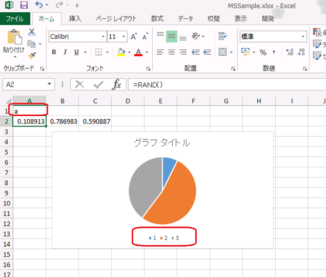

(※ 2016 年 10 月 26 日に Office Support Team Blog JAPAN に公開した情報のアーカイブです。)
こんにちは、Office サポートの町口です。
本記事では新たに確認された、Excel 2013 以降のバージョンで正しく横 (項目) 軸ラベルが更新されない問題について説明します。
!! Update !!
2017/02/09 Excel 2013 Windows インストーラー版の解決方法を追加しました。
2017/02/23 Excel 2013 クイック実行版と Excel 2016 クイック実行版 (FRDC) の解決方法を追加しました。
2017/02/23 Excel 2016 クイック実行版の解決方法 (CC) を追加しました。
2017/03/15 Excel 2016 Windows インストーラー版の解決方法を追加しました。
現象
Excel 2013 以降のバージョンで、グラフの横 (項目) 軸ラベルが参照しているセルを “” (NULL ではなく空文字) にして、 OpenXML 形式で保存すると、次回以降ファイルを開いたときに、グラフの横 (項目) 軸ラベルが参照しているセルの値を更新しても横 (項目) 軸ラベルに更新した値が表示されません。
再現手順
- Excel 2013 以降のバージョンで新規ブックを作成します。
- A2:C2 の範囲に =rand() を設定します。
- A1:C2 を選択した状態で円グラフ等を挿入します。
- 横 (項目) 軸ラベルとなるセル範囲 A1:C1 の範囲に =”” を設定します。
- xlsx 形式で保存し、ファイルを閉じます。
- ファイルを開き、A1 セルに “a” と入力します。
結果 :横 (項目) 軸ラベルに、”a” と表示されるべきところ、以下のように、1, 2, 3 と表示されます。

解決方法
次の更新プログラムを適用した環境で新たに作成するグラフでは、この現象は発生しません。
なお、更新プログラム適用前に作成したグラフは、更新プログラムを適用した環境で再作成する必要があります。
<< Excel 2013 >>
Windows インストーラー版:
次の更新プログラムを適用します。
3127966 February 7, 2017, update for Office 2013 (KB3127966)
クイック実行版:
[ファイル] タブの [アカウント] - [更新オプション] - [今すぐ更新] をクリックして最新の状態に更新し、
製品バージョンを 15.0.4903.1002 以上にします。
<< Excel 2016 >>
Windows インストーラー版:
次の更新プログラムを適用します。
3141452 March 7, 2017, update for Office 2016 (KB3141452)
クイック実行版:
バージョン 1701 で修正しました。
Current Channel : バージョン 1701 (ビルド 7766.2060) を 2017/2/24 日に公開しました。
First Release for Deferred Channel : バージョン 1701 (ビルド 7766.2060) を 2017/2/23 日に公開しました。
Deferred Channel : 2017 年 6 月のリリースを予定しています。
回避方法
以下のいずれかの方法で回避することができます。
方法 1 : xls 形式で保存する
~~~~~~~~~~~~~~~~~~~~~~~~~~~~~~~~~~
この問題は、OpenXML 形式で保存した場合の XML 情報の不整合に因り発生しますので、xls 形式で保存することで回避します。
なお、xlsx 形式で、既に現象が発生する状態になったグラフであっても、そのまま xls 形式で保存することで、回避することができます。
方法 2 : “” (空文字) が設定されないようにする
~~~~~~~~~~~~~~~~~~~~~~~~~~~~~~~~~~
グラフの横 (項目) 軸ラベルが参照しているセルに “” (空文字) が設定されないようにして、グラフを再作成します。
本情報の内容 ( 添付文書、リンク先などを含む) は、作成日時点でのものであり、予告なく変更される場合があります。